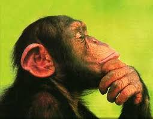

¿Qué es la estadística?

En grado decimo, la estadística es una rama de las matemáticas que se enfoca en recopilar, organizar, analizar e interpretar datos. Algunos conceptos importantes que se estudian incluyen:
Media aritmética:
Es el promedio de un conjunto de números. Se calcula sumando todos los números y dividiendo el resultado entre el número total de elementos.Mediana:
Es el valor que se encuentra en el medio de un conjunto de datos ordenados de menor a mayor (o de mayor a menor).Moda:
Es el valor que aparece con mayor frecuencia en un conjunto de datos.Desviación estándar:
Es una medida de dispersión que indica cuánto se desvían los datos de la media. Una desviación estándar alta indica que los datos están muy dispersos, mientras que una desviación estándar baja indica que los datos están más concentrados alrededor de la media.Diagramas de barras y gráficos circulares:
Son herramientas visuales que se utilizan para representar datos. Los diagramas de barras muestran la distribución de datos utilizando barras rectangulares de diferentes alturas, mientras que los gráficos circulares dividen un círculo en sectores proporcionales a los valores que representan.
¿Para que nos sirve la estadistica?
- Comprensión de datos: Ayuda a los estudiantes a comprender cómo recopilar, organizar, analizar e interpretar datos en diferentes contextos. Esto es esencial en un mundo donde la cantidad de datos disponibles está en constante crecimiento.
- Toma de decisiones informadas: La estadística proporciona herramientas para analizar datos y extraer conclusiones significativas. Los estudiantes aprenden a utilizar estas herramientas para tomar decisiones informadas en diversos ámbitos, desde la vida cotidiana hasta los negocios y la ciencia.
- Aplicaciones prácticas: La estadística se aplica en una amplia variedad de campos, desde la economía y la sociología hasta la medicina y la ingeniería. Los estudiantes aprenden cómo aplicar conceptos estadísticos en situaciones reales y cómo interpretar los resultados.
- Pensamiento crítico y resolución de problemas: Al estudiar estadística, los estudiantes desarrollan habilidades de pensamiento crítico y resolución de problemas. Aprenden a plantear preguntas significativas, a diseñar experimentos y a analizar datos de manera rigurosa.
- Preparación para la educación superior y el mundo laboral: La comprensión de la estadística es cada vez más importante en la educación superior y en el mercado laboral. Muchas carreras y disciplinas requieren habilidades en estadística, desde la investigación científica hasta el análisis de datos en el ámbito empresarial.
Aplicaciones de la estadística
En el contexto del grado 10, la estadística se utiliza para analizar datos en diferentes áreas, como:
- Encuestas de opinión.
- Estadísticas deportivas.
- Seguimiento del crecimiento y desarrollo en medicina.
- Análisis de resultados de experimentos científicos.
Datos de muestra - Ejemplo
A continuación, se presenta una tabla con algunos datos de muestra que podrían ser analizados en clase de estadística de grado 10:
| # |
Nombre |
Nota |
| 1 |
Juan |
85 |
| 2 |
Maria |
78 |
| 3 |
Carlos |
92 |
| 4 |
Sofia |
70 |
| 5 |
Luis |
88 |
Resultados estadísticos
- Media aritmética: (85 + 78 + 92 + 70 + 88) / 5 = 82.6
- Mediana: Ordenando las notas: 70, 78, 85, 88, 92. La mediana es 85.
- Moda: La moda de las notas es 85, ya que es la nota que aparece con mayor frecuencia (2 veces).
- Desviación estándar: Para Juan: 85−82.6=2.4
- Para Maria: 78−82.6=−4.6
- Para Carlos: 92−82.6=9.4
- Para Sofia: 70−82.6=−12.6
- Para Luis: 88−82.6=5.4
- Luego, elevamos estas diferencias al cuadrado:
- Para Juan:
- (2.4)^2=5.76
- Para Maria:
- (−4.6)^2=21.16
- Para Carlos:
- (9.4)^2=88.36
- Para Sofia:
- (−12.6)^2=158.76
- Para Luis:
- (5.4)^2 =29.16
- Ahora, calculamos la varianza, que es la media de estas diferencias al cuadrado:
- Varianza = (5.76+21.16+88.36+158.76+29.16)/5 = 303.2/5 = 60.64
- Desviación estándar = 7.78
- Diagramas de barras y gráficos circulares:
¿Quieres saber mas del tema?
Profundiza sobre estadistica
Encuesta